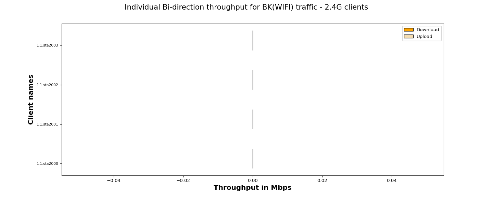
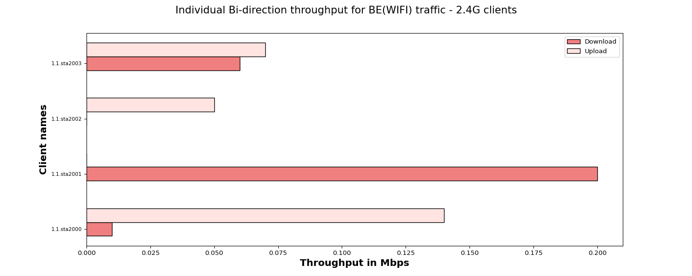
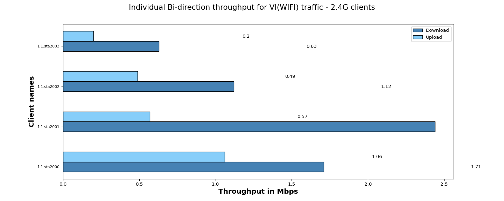
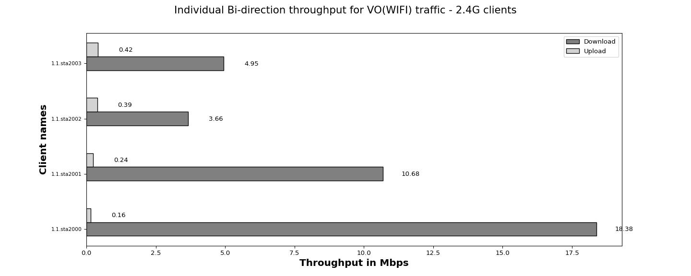

The objective of the QoS (Quality of Service) traffic throughput test is to measure the maximum achievable throughput of a network under specific QoS settings and conditions.By conducting this test, we aim to assess the capacity of network to handle high volumes of traffic while maintaining acceptable performance levels,ensuring that the network meets the required QoS standards and can adequately support the expected user demands.
| Test Configuration |
|
||||||||||||||||||||||||||||||||||||||||||||||||||||
| No of Stations | Throughput for Load 100.0 Mbps-upload | Throughput for Load 100.0 Mbps-download |
|---|---|---|
| 4 | BK : 0.0, BE : 0.26, VI: 2.32, VO: 1.21 | BK : 0.0, BE : 0.27, VI: 5.9, VO: 37.67 |
The below graph represents overall Bi-direction throughput for all connected stations running BK, BE, VO, VI traffic with different intended loads per station – 100.0 Mbps-download

The below graph represents individual throughput for 4 clients running BK (WiFi) traffic. Y- axis shows “Client names“ and X-axis shows “Throughput in Mbps”.

| Client Name | Mac | Channel | SSID | Type of traffic | Traffic Direction | Traffic Protocol | Offered upload rate(Mbps) | Offered download rate(Mbps) | Observed upload rate(Mbps) | Observed download rate(Mbps) | Observed Upload Drop (%) | Observed Download Drop (%) |
|---|---|---|---|---|---|---|---|---|---|---|---|---|
| 1.1.sta2000 | 04:f0:21:89:e7:f4 | 11 | NETGEAR_2G_wpa2 | Background | Bi-direction | TCP | 100.0 Mbps | 100.0 Mbps | 0.0 | 0.0 | 100.0 | 100.0 |
| 1.1.sta2001 | 04:f0:21:89:1a:f4 | 11 | NETGEAR_2G_wpa2 | Background | Bi-direction | TCP | 100.0 Mbps | 100.0 Mbps | 0.0 | 0.0 | 100.0 | 100.0 |
| 1.1.sta2002 | 04:f0:21:89:20:f4 | 11 | NETGEAR_2G_wpa2 | Background | Bi-direction | TCP | 100.0 Mbps | 100.0 Mbps | 0.0 | 0.0 | 100.0 | 100.0 |
| 1.1.sta2003 | 04:f0:21:89:7e:f4 | 11 | NETGEAR_2G_wpa2 | Background | Bi-direction | TCP | 100.0 Mbps | 100.0 Mbps | 0.0 | 0.0 | 75.0 | 100.0 |
The below graph represents individual throughput for 4 clients running BE (WiFi) traffic. Y- axis shows “Client names“ and X-axis shows “Throughput in Mbps”.

| Client Name | Mac | Channel | SSID | Type of traffic | Traffic Direction | Traffic Protocol | Offered upload rate(Mbps) | Offered download rate(Mbps) | Observed upload rate(Mbps) | Observed download rate(Mbps) | Observed Upload Drop (%) | Observed Download Drop (%) |
|---|---|---|---|---|---|---|---|---|---|---|---|---|
| 1.1.sta2000 | 04:f0:21:89:e7:f4 | 11 | NETGEAR_2G_wpa2 | Besteffort | Bi-direction | TCP | 100.0 Mbps | 100.0 Mbps | 0.14 | 0.01 | 45.454545 | 33.333333 |
| 1.1.sta2001 | 04:f0:21:89:1a:f4 | 11 | NETGEAR_2G_wpa2 | Besteffort | Bi-direction | TCP | 100.0 Mbps | 100.0 Mbps | 0.00 | 0.20 | 27.272727 | 73.333333 |
| 1.1.sta2002 | 04:f0:21:89:20:f4 | 11 | NETGEAR_2G_wpa2 | Besteffort | Bi-direction | TCP | 100.0 Mbps | 100.0 Mbps | 0.05 | 0.00 | 41.666667 | 23.529412 |
| 1.1.sta2003 | 04:f0:21:89:7e:f4 | 11 | NETGEAR_2G_wpa2 | Besteffort | Bi-direction | TCP | 100.0 Mbps | 100.0 Mbps | 0.07 | 0.06 | 57.142857 | 50.000000 |
The below graph represents individual throughput for 4 clients running VI (WiFi) traffic. Y- axis shows “Client names“ and X-axis shows “Throughput in Mbps”.

| Client Name | Mac | Channel | SSID | Type of traffic | Traffic Direction | Traffic Protocol | Offered upload rate(Mbps) | Offered download rate(Mbps) | Observed upload rate(Mbps) | Observed download rate(Mbps) | Observed Upload Drop (%) | Observed Download Drop (%) |
|---|---|---|---|---|---|---|---|---|---|---|---|---|
| 1.1.sta2000 | 04:f0:21:89:e7:f4 | 11 | NETGEAR_2G_wpa2 | Video | Bi-direction | TCP | 100.0 Mbps | 100.0 Mbps | 1.06 | 1.71 | 29.319372 | 25.423729 |
| 1.1.sta2001 | 04:f0:21:89:1a:f4 | 11 | NETGEAR_2G_wpa2 | Video | Bi-direction | TCP | 100.0 Mbps | 100.0 Mbps | 0.57 | 2.44 | 14.563107 | 11.872146 |
| 1.1.sta2002 | 04:f0:21:89:20:f4 | 11 | NETGEAR_2G_wpa2 | Video | Bi-direction | TCP | 100.0 Mbps | 100.0 Mbps | 0.49 | 1.12 | 25.252525 | 21.965318 |
| 1.1.sta2003 | 04:f0:21:89:7e:f4 | 11 | NETGEAR_2G_wpa2 | Video | Bi-direction | TCP | 100.0 Mbps | 100.0 Mbps | 0.20 | 0.63 | 15.789474 | 24.050633 |
The below graph represents individual throughput for 4 clients running VO (WiFi) traffic. Y- axis shows “Client names“ and X-axis shows “Throughput in Mbps”.

| Client Name | Mac | Channel | SSID | Type of traffic | Traffic Direction | Traffic Protocol | Offered upload rate(Mbps) | Offered download rate(Mbps) | Observed upload rate(Mbps) | Observed download rate(Mbps) | Observed Upload Drop (%) | Observed Download Drop (%) |
|---|---|---|---|---|---|---|---|---|---|---|---|---|
| 1.1.sta2000 | 04:f0:21:89:e7:f4 | 11 | NETGEAR_2G_wpa2 | Voice | Bi-direction | TCP | 100.0 Mbps | 100.0 Mbps | 0.16 | 18.38 | 26.470588 | 13.766389 |
| 1.1.sta2001 | 04:f0:21:89:1a:f4 | 11 | NETGEAR_2G_wpa2 | Voice | Bi-direction | TCP | 100.0 Mbps | 100.0 Mbps | 0.24 | 10.68 | 21.153846 | 1.702128 |
| 1.1.sta2002 | 04:f0:21:89:20:f4 | 11 | NETGEAR_2G_wpa2 | Voice | Bi-direction | TCP | 100.0 Mbps | 100.0 Mbps | 0.39 | 3.66 | 15.151515 | 30.793651 |
| 1.1.sta2003 | 04:f0:21:89:7e:f4 | 11 | NETGEAR_2G_wpa2 | Voice | Bi-direction | TCP | 100.0 Mbps | 100.0 Mbps | 0.42 | 4.95 | 9.523810 | 10.110803 |
| Information |
|
||||